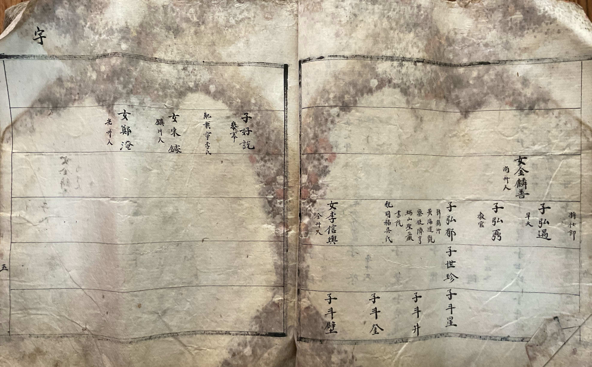
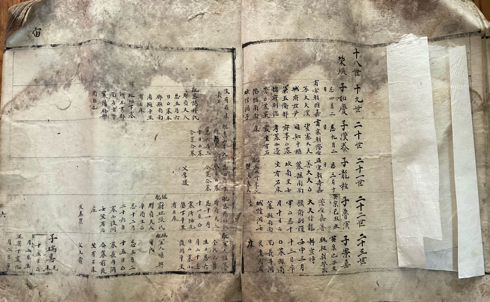

경주김씨 두리종중은 강원도 양양군 현남면 두리 일대에 정착한 경주김씨 후손이 분묘 수호 및 공동 선조 봉제사 등의 목적으로 형성한 혈연 집단으로, 이 곳에 처음 정착한 태사공의 20세손 김여경(金如瓊)을 시작으로 14대에 걸쳐 두리 일대에 거주해 왔다.
두리종중 소개
두리종중의 계보
두리종중은 오랜 옛날부터 태사공의 9세손인 상촌공의 후손으로 전해져 왔다. 하지만 김여경 윗대의 계보가 실전되어 그 선조가 누구인지를 알 수 없는 실정인데, 1804년(순조 4) 영동지방에 발생한 대형 산불로 종가를 비롯해 종가 소장 문서가 모두 불타 버린 것이 그 원인으로 추정된다. 현재 종가에는 1894년경에 제작된 것으로 추정되는 『경주김씨파보(慶州金氏派譜)』와 20세기 중엽에 제작된 『경주김씨세보(慶州金氏世譜)』 두 책이 전하는데, 김여경 윗대의 계보가 두 책에 다르게 기재되어 있다.
파보의 '宙' 장에는 김여경부터 시작되는 두리종중의 계보가 적혀 있는데, 김여경의 위로는 부친의 휘 영환(榮煥) 두 자만 기재되어 있을 뿐 그 이상의 정보는 전하지 않는다. 이를 통해 파보가 제작된 1894년경에 이미 김여경의 부친 이름만 전할 뿐 그 상계(上系)의 정보는 실전되었음을 추정할 수 있다. 그 이전 장인 '宇' 장에는 태사공의 17세손 김홍욱(金弘郁)과 김홍필(金弘弼) 등 그 형제들이 기재되어 있으며, 그 밑으로 김홍욱의 장남 김세진(金世珍)과 김세진의 자녀가 4남 김두벽(金斗壁)까지만 기재되어 있다. '宇' 장의 인물 배치는 다른 족보의 것을 그대로 모사한 듯 다소 이상하게 배치되어 있으며, 김홍필의 자식, 김홍욱의 차남 및 딸들과 같이 기재할 필요가 없는 인물들은 기재를 생략하였다. 어떤 목적에서 이와 같이 인물을 배치하였는지는 알 수 없다.


『경주김씨파보』의 宇 장과 宙 장
세보에서는 반대로 김여경이 김홍(金泓)의 후손으로 그 윗대의 계보가 상세하게 적혀 있었는데, 이를 교차검증해본 결과 다른 인물의 정보를 차용한 잘못된 계보임이 확인되었다. 이에 세보의 계보는 이곳에서 다루지 않겠다. 한편, 1957년에 간행된 『정유대동보(丁酉大同譜)』에서 김영환의 이름을 찾을 수 있었는데, 상촌공 2세손 좌랑공(佐郞公) 김영원(金永源)의 후손인 김윤백(金允白)의 3남으로 기재되어 있었다. 김영환의 7남 중 5남으로 김여경(金如瓊)이 기재되어 있는데, 김여경의 밑으로 '무단(无單)', 즉 김여경의 후손이 수단을 제출하지 않아 정보를 알 수 없다고 적혀 있다. 또한, 『울진장씨대동보(蔚珍張氏大同譜)』에는 김여경의 증손인 김상연(金尙演)의 아내 울진장씨의 항목에 김상연의 4대조가 기재되어 있는데, 여기에 김상연의 증조로 '김여경(金如瓊)'이 기재되어 있다. 이를 통해 두리종중에서는 1804년 대형 화재 등의 이유로 김여경을 포함한 상계의 문서가 소실되었고, 김여경의 이름이 구전되는 과정에서 '金如瓊'이 아닌 '金如慶'으로 잘못 기록되었음을 추정해볼 수 있다.
한편, 위의 주장에 대해 후대의 조작이 아니냐는 의문을 충분히 제기할 수 있다. 이에 정유보 이전에 간행된 족보에서 확인한 내용은 다음과 같다.
- 1784년 갑진보김영원의 손자 김양필(金良弼)의 서자로 김직(金直) 기재, 김직 이하의 계보는 기재되지 않음.
- 1871년 신미보김영원-김칭(金偁)-김양필까지만 기재. (김직이 서자이기 때문으로 추정되나, 정확한 이유는 알기 어려움)
- 1922년 임술보김영원~김영환까지의 계보 기재, 김영환의 7남 중 5남 김여경만 미기재.
- 1957년 정유보김영환의 5남으로 김여경(金如瓊) 기재, 김여경 밑으로 ‘无單’ 기재
- 1999년 기묘보정유보와 동일.
1922년 임술보에서 김영환의 7남 중 5남 김여경이 생략된 이유는 편찬위원회 측에서 김여경의 존재를 알고 있었으나 그 아래의 계보를 알 수 없었기 때문이라고 추정해 볼 수 있다. 그 이후 1957년 정유보에 김여경이 기재된 것은 편찬 방식의 변화 때문으로 추정된다. 후손의 정보를 알 수 없는 경우에도 이름을 등재하되, '无單'으로 표시하는 방향으로 처리 방식이 바뀐 것이다.
한편, 대동보 편찬위원회 측에 수단을 제출하지 못하고 김여경의 밑으로 '无單'이라고 적힐 수밖에 없던 이유는 명확하다. 두리종중에서는 19세기경에 이미 여경의 정확한 이름을 포함한 그 상계의 정보가 실전되었고, 이로 인해 대동보에 조상의 이름이 등재되었다는 사실조차 인지하지 못하였기 때문이다. 오히려 정유보에서 김여경의 밑으로 '无單'이라고 적혀 있다는 사실이 대동보의 간행에 두리종중이 관여하지 않았음을 증명해준다. 만약 두리종중에서 김영환의 5남으로 김여경의 편입을 요청하였다면, 필시 그 아래의 계보도 같이 제출하였을 것이다. 또한, 김여경의 본래 이름을 확인할 수 있던 울진장씨대동보 역시 종중의 이해관계가 개입될 수 없었을 것이다. 이러한 정황들을 종합할 때, 해당 계보가 후대에 조작되었을 가능성은 낮다고 판단된다.
위의 과정을 통해 확정된 김여경 윗대의 계보는 아래와 같다.
▸ 김여경 상대의 계보
두리종중의 돌림자
김여경 하계(下系)의 인물들을 외부 사료와 교차로 확인했을 때, 족보상의 인명과 실제 인명이 다른 사례를 쉽게 찾을 수 있다. 이는 후대에 족보를 제작하는 과정에서 조상들의 이름을 항렬자에 맞게 수정한 것으로 추정되는데, 그 대표적인 예 중 하나가 김여경의 6대손과 7대손의 사례이다.
김여경의 5대손과 6대손, 즉 태사공 25세손과 26세손의 항렬자는 각각 '商O'과 'O濟'이다. 실제로 파보에서 4대손 김도철(金道喆)의 장남과 차남의 이름은 김상형(金商衡)과 김상화(金商華)로 기재되어 있다. 다만, 종가실록(宗家實錄)과 광무호적(光武戶籍), 준호구(準戶口) 등의 외부 사료에는 이들의 이름이 김주형(金胄衡)과 김주화(金胄華)로 기재되어 있다. 6대손의 경우도 동일하다. 김주형의 장남~4남은 파보에 김선제(金善濟, 초휘 김지제(金志濟)), 김의제(金義濟), 김성제(金聲濟), 김필제(金弼濟)로, 김주화의 장남은 김치제(金致濟)로 기재되어 있다. 다만, 종가실록과 광무호적, 준호구 등에 기재된 이들의 실제 이름은 다음과 같았다. 김주형의 아들들은 김지성(金志聲, 金智聲), 김의성(金義聲, 金意聲, 金宜聲), 김봉성(金鳳聲), 김학성(金鶴聲)으로, 김주화의 장남은 김치성(金致聲)으로 기재되었다.
이렇게 족보상의 인명과 실제 인명이 다르게 기재된 이유는 2가지로 추정해볼 수 있다. 첫번째는 위에서 언급했듯이 후대에 족보를 제작하는 과정에서 조상들의 이름을 항렬자에 맞게 수정한 것이다. 10대손인 김규하(金圭夏, 1881~1934년) 대부터 족보상의 인명과 실제 인명이 일치하는 것이 그 증거로 볼 수 있다. 다만, 김규하의 항렬은 유일하게 대동항렬과 다른 '圭'를 항렬자로 사용하였다. 두번째 가능성은 해당 인물들의 생전 당시에도 족보상의 이름과 실제 이름을 다르게 기재하였으며, 당시에도 2개의 인명이 병존했다는 것이다. 그 사례로 볼 수 있는 인물이 5대손 김도철이다. 파보 등의 족보와 강릉 함씨 족보의 함효택(咸孝澤, 김지성의 맏사위) 항목 등에서는 그 이름을 '김경희(金景喜)' 계열로 기재하였으나, 종가실록의 기록 중 김도철이 관아에 올린 입지 5장과 규장각 소장 방목, 일성록, 승정원일기, 광무호적, 호구단자, 준호구, 강릉 함씨 족보의 함문영(咸文榮, 김지성의 둘째 사위) 항목에서는 그 이름을 '김도철'로 기재하였다. 양양군지에서는 휘로 '김경희'를, 자(字)로 '도철'을 기재하였다. 물론, 위 김도철의 사례도 시각에 따라 첫번째 가능성을 뒷받침하는 사례로 볼 수도 있다.
김여경 하계 인물들의 인명 불일치 사례를 정리하면 아래와 같다. 아래에 언급되지 않은 다른 인물들도 실제 이름이 전하지 않을 뿐 족보상의 이름과 실제 이름이 불일치했을 것으로 추정된다.
김한태(金漢泰)2대손
김준태(金俊泰) | 일성록, 울진장씨대동보
김용주(金龍柱)3대손
김용흡(金龍翕) | 준호구, 호구단자
김광흡(金光潝) | 울진장씨대동보
김영주(金英柱)3대손
김광흡(金光翕) | 경주김씨파보 : 초휘 광흡(光翕)
김노연(金魯演)4대손
김상연(金尙演) | 준호구, 호구단자, 숭정3신유하이정종대왕제향세실경과정시문무전시방목
김상연(金尙淵) | 울진장씨대동보
김노홍(金魯弘)4대손
김상홍(金尙弘) | 경주김씨파보 : 초휘 상홍(尙弘)
김경희(金景喜)5대손
김도철(金道喆) | 준호구, 호구단자, 광무호적, 종가실록, 일성록, 승정원일기, 숭정3신유하이정종대왕제향세실경과정시문무전시방목
김도철(金道喆) | 양양군지 : 자(字) 도철(道喆)
김상형(金商衡)6대손
김주형(金胄衡) | 종가실록, 준호구, 호구단자, 광무호적, 강릉함씨 족보
김상화(金商華)6대손
김주화(金胄華) | 준호구, 광무호적
김선제(金善濟)7대손
김지제(金志濟) | 경주김씨파보 : 초휘 지제(志濟), 광무호적
김지성(金志聲, 金智聲) | 준호구, 호구단자, 광무호적
김의제(金義濟)7대손
김의성(金義聲, 金意聲, 金宜聲) | 준호구, 호구단자, 광무호적
김성제(金聲濟)7대손
김철제(金哲濟) | 광무호적
김봉성(金鳳聲) | 준호구, 호구단자, 광무호적
김필제(金弼濟)7대손
김학성(金鶴聲) | 준호구, 호구단자, 광무호적
김치제(金致濟)7대손
김치성(金致聲) | 준호구, 광무호적
김동영(金東永)8대손
김응록(金應祿) | 준호구, 호구단자
김탁영(金鐸永) | 준호구, 광무호적
김동규(金東奎)8대손
김탁규(金鐸奎) | 준호구, 광무호적
김동계(金東烓)8대손
김두형(金杜瀅) | 준호구
김종열(金宗烈)9대손
김복원(金復源) | 준호구
김재열(金載烈)9대손
김환원(金渙源) | 준호구, 광무호적
김상열(金相烈) | 광무호적
김주열(金周烈)9대손
김덕원(金德源) | 준호구
김홍열(金鴻烈)9대손
김도원(金道源) | 광무호적
김희열(金熙烈)9대손
김왈귀(金曰貴) | 광무호적
클릭하여 확대 · 드래그하여 이동